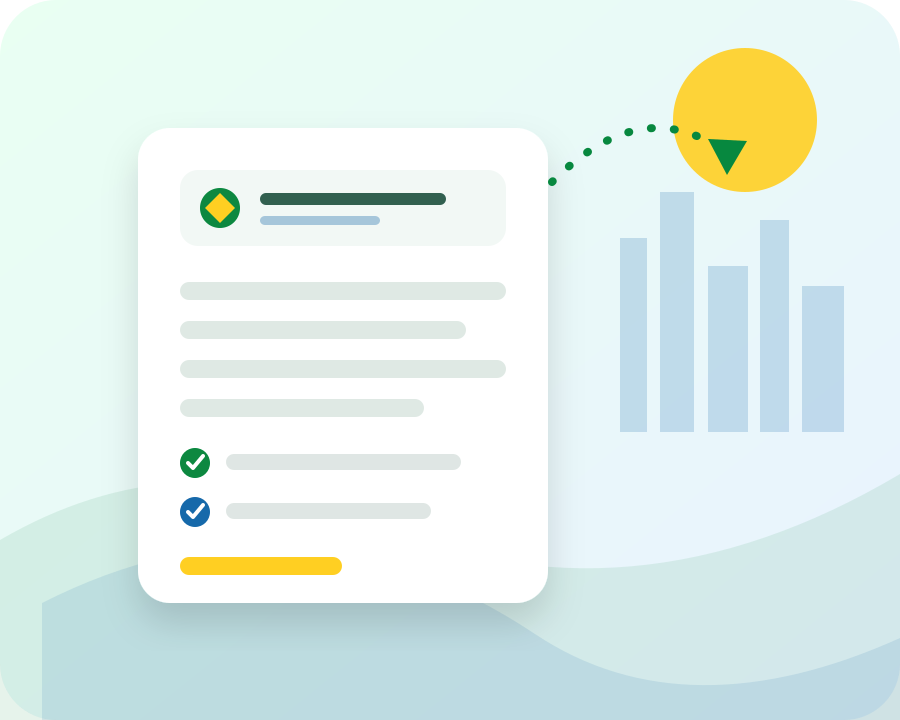

✈
Documento de viagem
Organização de pedidos de documentos de viagem e dos anexos correspondentes.
Do Brasil para os Estados Unidos
A Imigração Brasileira ajuda brasileiros a preparar formulários e organizar documentos de imigração com clareza, cuidado e comunicação na sua língua.
Na consulta presencial, você escolhe primeiro um horário disponível e depois conclui o pagamento de US$50. O valor é creditado ao serviço de preparação se você decidir prosseguir conosco.

Como podemos ajudar
Preparamos formulários a partir das informações fornecidas pelo cliente e ajudamos a organizar os documentos de apoio solicitados.
Preparação administrativa de formulários e organização de documentos para pedidos familiares selecionados pelo cliente.
Saiba mais →Organização de formulários e documentos de apoio para processos de ajuste de status indicados pelo cliente.
Saiba mais →Assistência de preenchimento para formulários de cidadania e preparação de uma lista organizada de documentos.
Saiba mais →Preparação de formulários de autorização de trabalho com base nas respostas e instruções do cliente.
Saiba mais →Organização de pedidos de documentos de viagem e dos anexos correspondentes.
Preenchimento administrativo do formulário escolhido pelo cliente e preparação do pacote de suporte.
Saiba mais →Verificação administrativa de campos em branco, assinaturas e ordem dos documentos — sem análise jurídica.
Orientação administrativa sobre opções de tradução e organização de documentos em português e inglês.
Preços transparentes
O valor depende do formulário ou pacote solicitado. Taxas do USCIS, traduções, exames médicos e outros custos de terceiros não estão incluídos.
Não somos advogados e não oferecemos aconselhamento jurídico. O cliente escolhe os formulários a serem preparados.
O cliente identifica qual formulário ou processo deseja preparar. Quando houver dúvida jurídica, recomendamos procurar um advogado licenciado ou representante credenciado.
Você recebe uma lista organizada das informações e documentos necessários para o serviço administrativo solicitado.
Os formulários são preenchidos com base nas suas respostas e os documentos são organizados para sua revisão.
O cliente revisa o pacote final, assina onde necessário e é responsável pela decisão e pelo envio ao órgão governamental.
Feito para brasileiros
Explicações diretas, comunicação acolhedora e materiais pensados para quem prefere tratar assuntos importantes em português.
Checklists, etapas claras e atenção aos detalhes administrativos para reduzir confusão e retrabalho.
Limites do serviço explicados com clareza: preparação documental, sem aconselhamento jurídico e sem promessa de resultado.
Recursos em português
Guias práticos para reunir informações e entender o papel de um preparador de documentos.
Uma estrutura simples para arquivos, cópias e revisão.
FamíliaCategorias úteis para a preparação inicial.
OrganizaçãoInformações comuns para organizar antes do preenchimento.
Confiança local
Quando sua página do Google Business estiver pronta, avaliações reais poderão aparecer nesta seção. O site nunca cria ou publica depoimentos fictícios.
Integração preparada. Adicione a URL correta do perfil em site-config.js.
Perguntas frequentes
Não. A Imigração Brasileira é um serviço de preparação de documentos. Não oferecemos aconselhamento jurídico, não determinamos elegibilidade e não representamos clientes perante o USCIS ou tribunais.
Não. Essa é uma decisão jurídica. O cliente deve identificar o serviço desejado ou buscar orientação de um advogado licenciado ou representante credenciado.
Estamos baseados em Las Vegas. Dependendo do tipo de serviço e da documentação, o atendimento administrativo pode ser realizado remotamente.
Não. Todas as decisões são tomadas pelas autoridades governamentais, e nenhum preparador de documentos pode garantir aprovação.
Sim. Use o botão do WhatsApp para iniciar uma conversa. Confirme primeiro que o número exibido está habilitado para receber mensagens no aplicativo.
Fale conosco
Conte qual serviço de preparação você procura. Responderemos em português para explicar os próximos passos administrativos.
A consulta por telefone é gratuita. Para a consulta presencial, selecione o horário primeiro e conclua o pagamento de US$50 para confirmar a reserva.